外观：延续家族式设计 时尚大气
长安福特ESCORT，其中文名称为“福睿斯”。外观上来看，新车延续了概念版的设计理念，大气的造型有种小号“蒙迪欧”的味道，前脸上又有“阿斯顿·马丁”式的视觉效果，具备了讨好中国消费者的实力，整体外形稳重时尚的设计风格总体满足家庭用户需求。
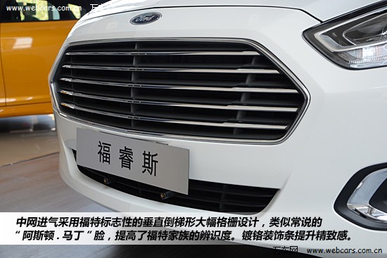
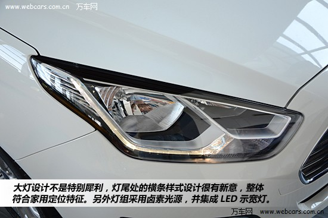
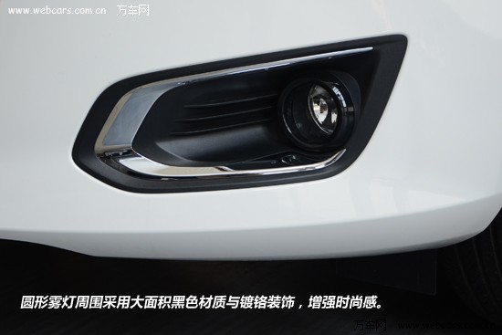
福睿斯车长4587mm宽1825mm高1490mm，轴距达到了2687mm。在侧面设计上，它与福克斯相似，但车身与福克斯相比更修长低矮一些，而宽度方面也比新福克斯少了15mm。
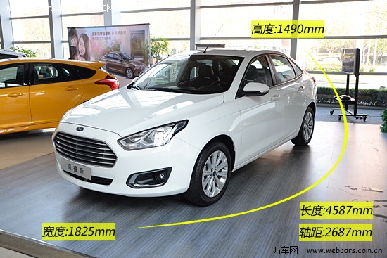
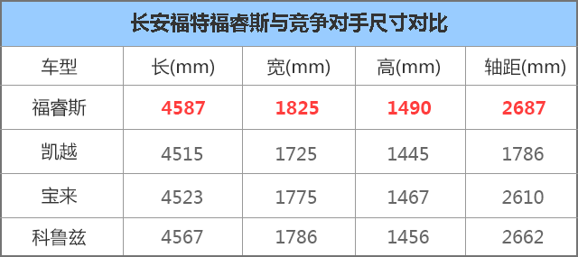
车身侧面轮廓设计上，设计师将福特福睿斯的轴距增加了40毫米，并将A柱A柱位置设计的非常靠后，从而营造出一种视觉上更高级，比例更协调的修长车身。
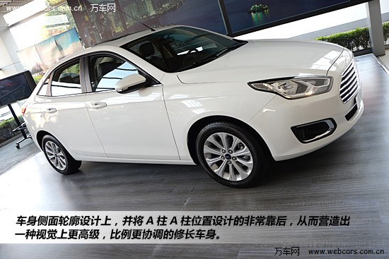
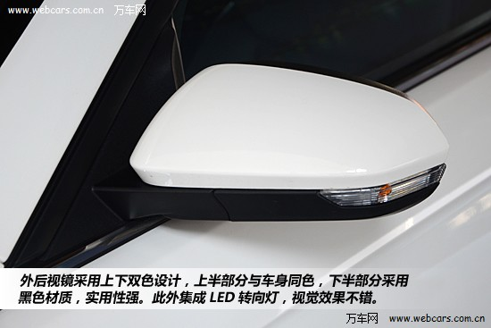
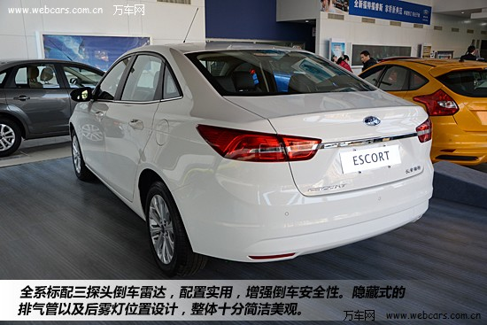
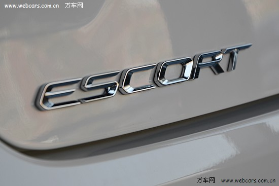
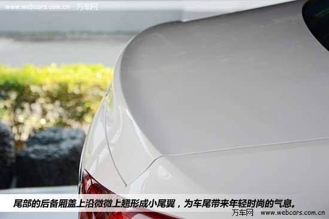
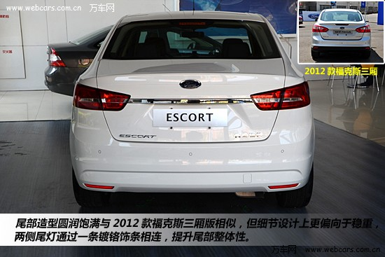
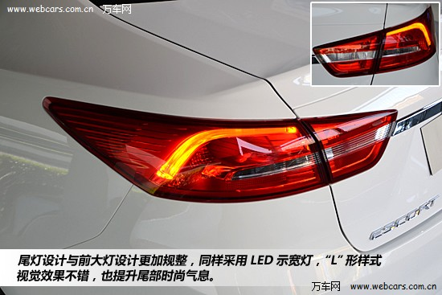
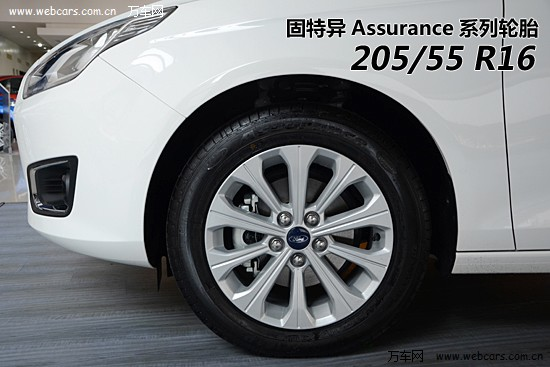
福睿斯配备十幅式铝合金轮毂，十分大气稳重，偏向居家风格。轮胎采用固特异品牌Assurance系列轮胎，尺寸为205/55 R16 ，这款轮胎主打耐磨和舒适为主。
内饰：简约风格 偏向年轻化
内饰采用全黑颜色搭配，真皮座椅，中控黑色面板以及方向盘配合镀铬装饰，十分年轻运动。另外还有黑色+米色的居家风格可供选择。多媒体区没有配备主流的大屏幕，而是采用比较实用的按键代替，除了支持CD、USB播放外，还可以通过蓝牙来连接到车载音响，并用方向盘的按键拨打方便。
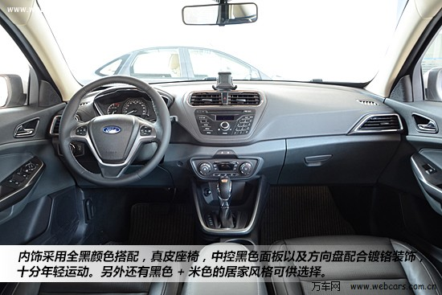
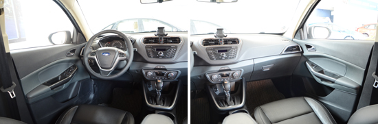
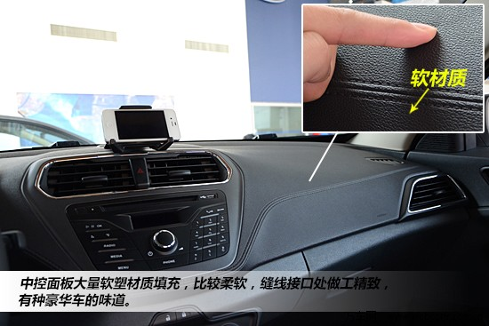
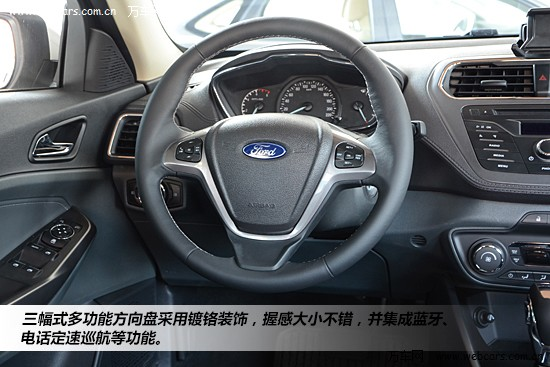
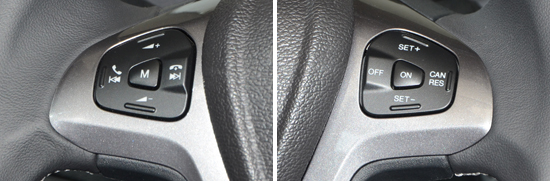
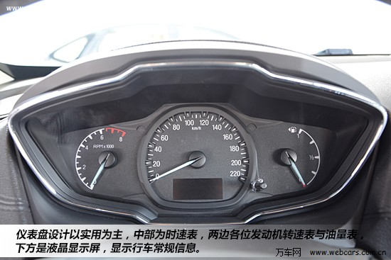
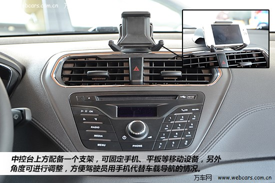
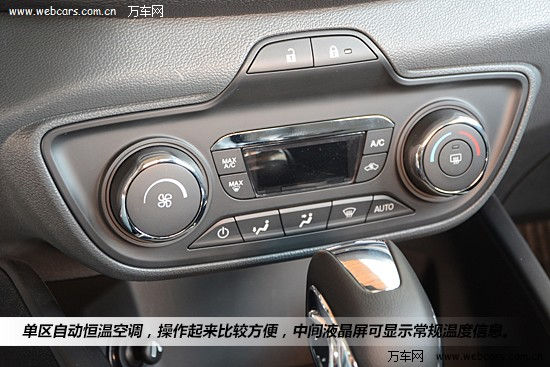
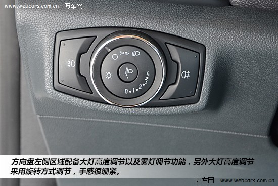
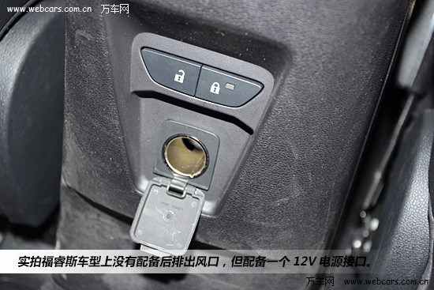

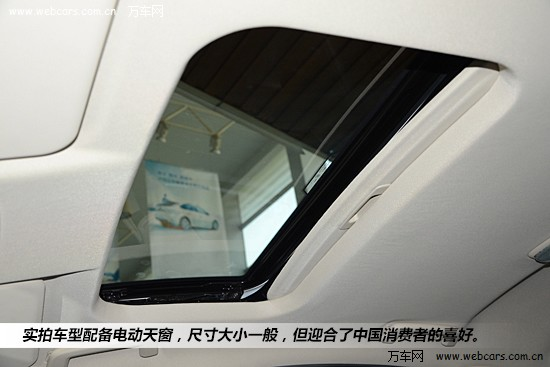
在被动安全方面，福睿斯配备了六安全气囊，能在发生碰撞事故时最大程度减少乘员伤害。尤其是同级领先的侧安全气帘，能有效保护驾驶员和乘客免受侧面撞击的伤害。高强度吸能式车身结构和全车大面积采用的高强度钢，让整车安全性进一步优化。主动安全方面，福睿斯配备了坡道起步辅助系统、电子稳定系统、刹车防抱死系统、制动力分配系统和刹车辅助系统等多种主动安全系统，在紧急状态时可有效控制车身姿态，避免事故发生，保障全家乘车出行安心无虞。
空间：储物空间丰富 优越同级
针对家庭消费者对宽敞空间的向往及满足全家出行的需求，福特福睿斯优化的车身结构和座椅的巧妙设计提升整体乘坐空间。福睿斯轴距达到2687mm，车身宽度达到1825mm，车内空间更宽敞舒适。前座椅背部采用特别的内凹式设计，为后排乘客留出900mm的腿部伸展空间，膝部也可拥有多达53mm的活动范围，达到同级领先水平。
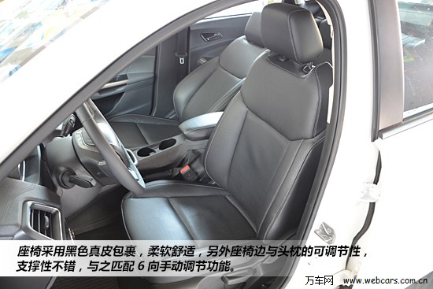
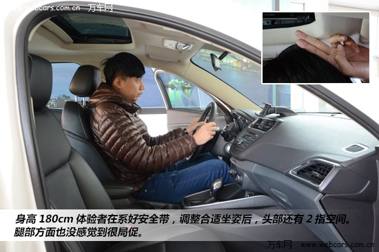
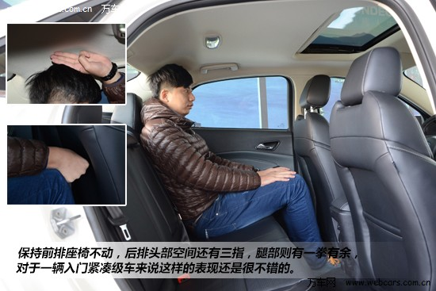
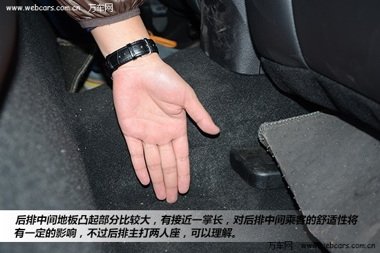
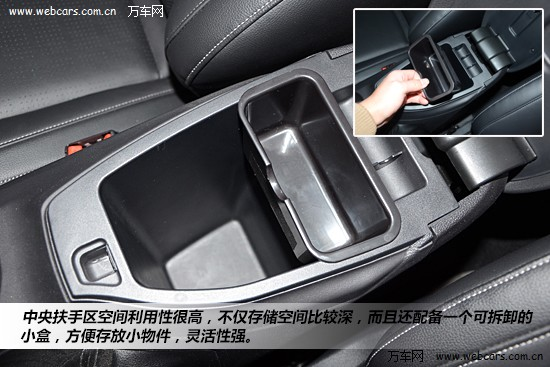
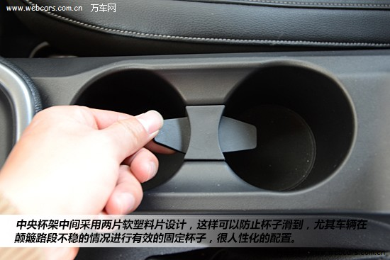
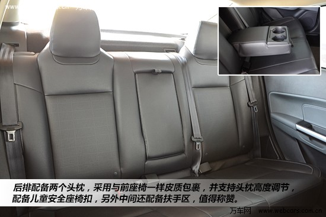
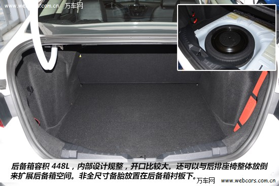
车内储物空间丰富，且各区域设计规整，实用性很强。后备箱容积448L，算是个中规中矩的成绩，后排座椅可整体放倒来扩展后备箱空间；非全尺寸备胎放置在后备箱衬板下。
动力：1.5升双独立式凸轮轴可变正时发动机
福特福睿斯搭载的高效节能的先进动力系统，符合进取型家庭的绿色消费观。1.5升双独立式凸轮轴可变正时发动机及6速手自一体变速器的高效动力组合，为福睿斯提供了平顺的动力输出和出色的燃油经济性，百公里最低油耗仅为6.5升，尾气排放则完全符合国V环保标准。
悬挂方式，采用市场家轿主流的前麦弗逊，后扭力梁非独立悬挂，该悬挂组合在舒适性上表现不错。
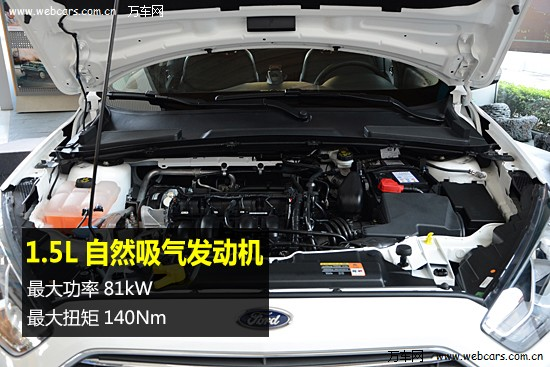
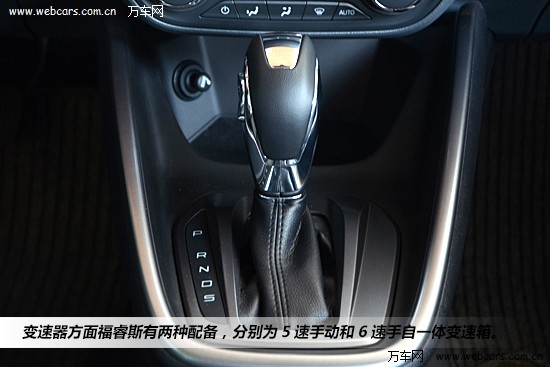
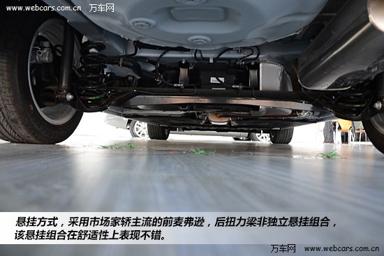
总结：
稳扎稳打的实在和周到就是最有力的武器，可是福睿斯并不满足于此，在千篇一律的面孔当中福睿斯更奢求个性，所以它大胆地在设计上给了你一个深刻得难以忘记的印象。是时候让平凡不再平庸，即使是小人物也无需忍受那刻板无聊的面孔，同样能够用个性招摇。
霸气的外观，宽敝的空间，优秀的安全性能，6.5升的低油耗都完全是针对国内家庭而做的贴心设计，在十万元级的家用车当中，福特福睿斯可算是性价比之王，目前此车刚刚上市正处于最为优惠的阶段，心动不如行动，马上点击预约试驾感受一下这台车的魅力吧。